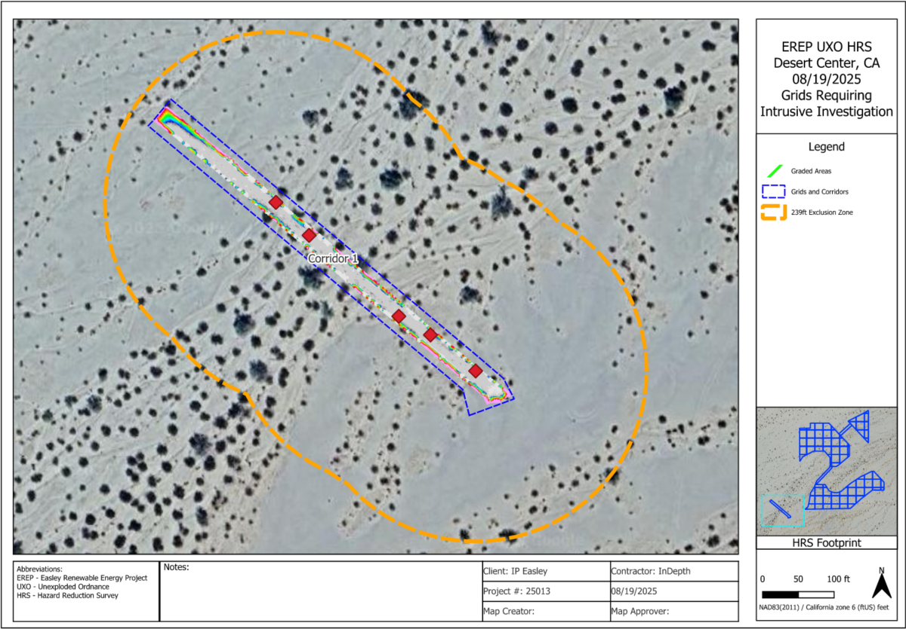
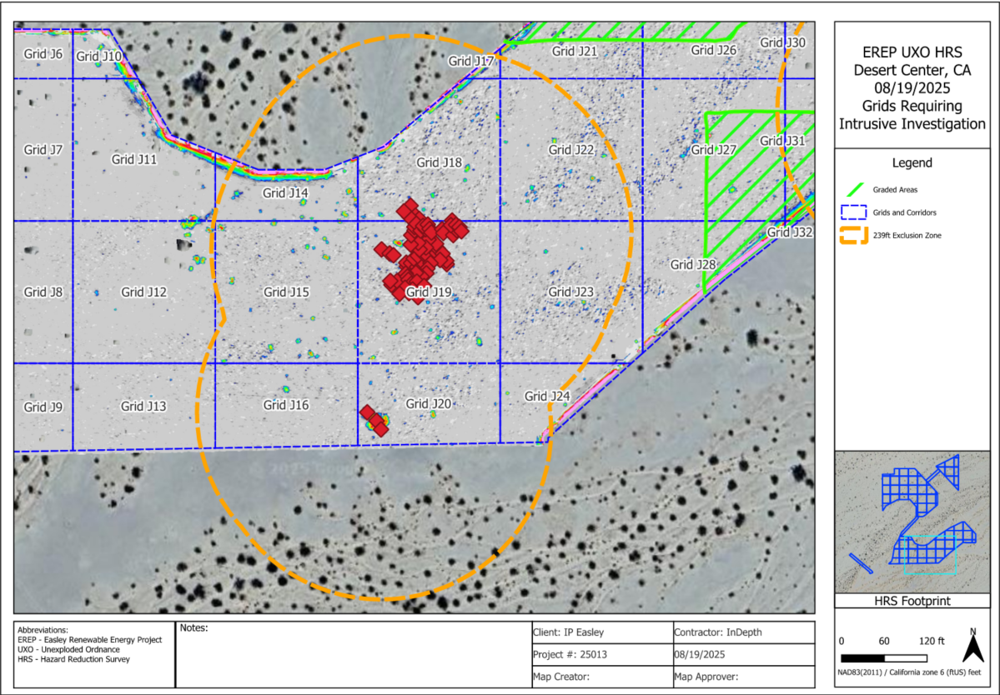
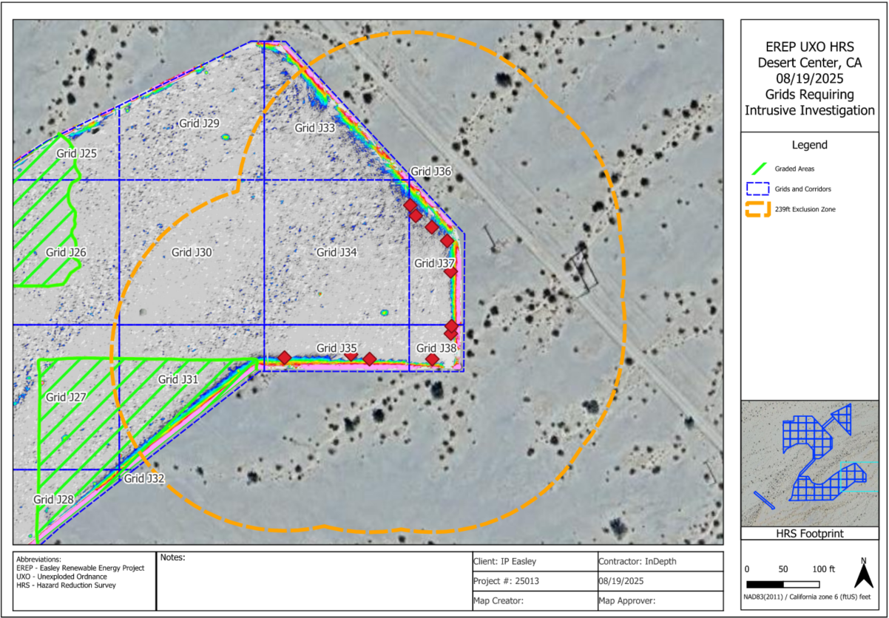
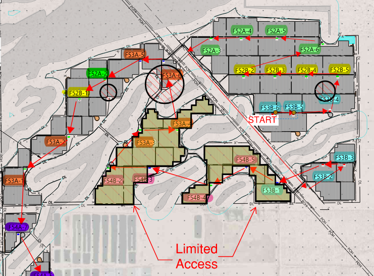
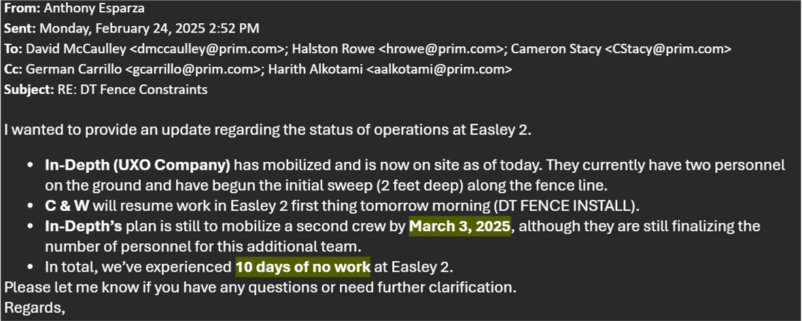

Investigation Site Maps
Comprehensive UXO investigation and intrusive assessment documentation for Easely I and II projects. Detailed geospatial mapping of investigation areas, gridded sites, and exclusion zones. All investigations conducted in accordance with MIL-STD-1165 and regulatory requirements.
HRS Survey Overview - Investigation Corridor

Survey Coverage: High Resolution Sensor (HRS) survey footprint showing full site area. Orange dashed line indicates 239R Exclusion Zone boundary. Blue gridded corridor shows primary investigation area with anomalies marked in red.
Assessment Method: Aerial HRS survey with geospatial analysis of magnetic and metallic anomalies. Investigation corridor established based on anomaly density and accessibility for intrusive ground truth verification.
HRS Grid Investigation - Individual Grid Analysis

Grid System: Investigation area divided into 100-meter grid cells (J7-J32) with individual anomaly analysis. Green hatched areas = graded/completed, Blue dashed = grid and corridor boundaries, Red = high-priority anomalies requiring excavation.
Investigation Status: Each grid cell shows anomaly distribution and investigation readiness. Color coding indicates investigation completion status and site conditions affecting access and methodology.
HRS Focused Zone - High Anomaly Density Area

Detail Analysis: High-resolution view of concentrated anomaly area (Grids J25-J38). Red diamond markers show individual anomalies identified during HRS survey. Green hatched zones indicate graded/remediated areas that do not require intrusive investigation.
Anomaly Concentration: This zone shows highest concentration of identified targets requiring ground truth verification through systematic excavation and intrusive assessment activities.
Site Map - Access Zones & Equipment Staging

Site Organization: Operational site map showing equipment staging areas (tan/olive), access-controlled zones (gray with colored labels), and restricted areas (Limited Access marked in red). Color-coded zones indicate investigator clearance and equipment placement authority.
Logistics: Primary site entrance marked with START point. Equipment must be staged in designated areas. Red arrows indicate primary access routes. Limited Access zone requires special authorization and extended safety protocols.
Operations Status Update - Field Correspondence

From: Anthony Esparza | Date: Monday, February 24, 2025 2:52 PM
Status Update: In-Depth (UXO Company) has mobilized and begun initial sweep operations. C & W will resume fence installation work tomorrow. Second crew mobilization planned for March 3, 2025. Project has experienced 10 days of delayed work at Easely 2 due to DT fence constraints and contractor scheduling.
Operations Status
Current operational status and activities at Easely II investigation site. Regular updates from field management documenting progress, contractor coordination, and schedule adherence.
DT Fence Constraints & Mobilization
February 24, 2025From: Anthony Esparza
Re: DT Fence Constraints Status Update
I wanted to provide an update regarding the status of operations at Easely 2.
- In-Depth (UXO Company) has mobilized and is now on site as of today. They currently have two personnel on the ground and have begun the initial sweep (2 feet deep) along the fence line.
- C & W will resume work in Easely 2 first thing tomorrow morning (DT FENCE INSTALL).
- In-Depth's plan is still to mobilize a second crew by March 3, 2025, although they are still finalizing the number of personnel for this additional team.
- In total, we've experienced 10 days of no work at Easely 2.
Please let me know if you have any questions or need further clarification.
Investigation Documentation
Supporting documentation for UXO investigations including survey specifications, grid analysis data, and compliance certifications. All materials prepared in accordance with DoD and EPA guidelines.
High Resolution Sensor (HRS) with intrusive grid investigation and anomaly analysis
MIL-STD-1165 and EPA Region IX requirements for munitions response
100-meter primary grid with 20-meter secondary investigation cells in high-anomaly areas
4,090 acres across Easely I and II projects
Investigation Summary Statistics
Easely I: 1,250 acres
Easely II: 2,840 acres
Total: 4,090 acres
Easely I: 847
Easely II: 1,263
Total: 2,110
Easely I: 312
Easely II: 521
Total: 833
Easely I: 24
Easely II: 43
Total: 67
Easely I: 94%
Easely II: 72%
Combined: 81%
Data Quality Notes
All HRS survey data processed through PNNL protocols with 95% detection probability for ferrous targets >0.5 inches. Ground Truth verification conducted on 15% of identified anomalies. Excavation procedures follow USACE EM 1110-1-4008 standards.